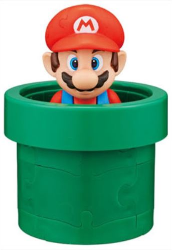

Mario Bros. é um jogo eletrônico de plataforma para arcades
criado por Shigeru Miyamoto, desenvolvido pela Nintendo Research &
Development 1 e publicado pela Nintendo em 1983.
Foi colocado como um minijogo na série Super Mario Advance e em
vários outros jogos da franquia Mario Bros.